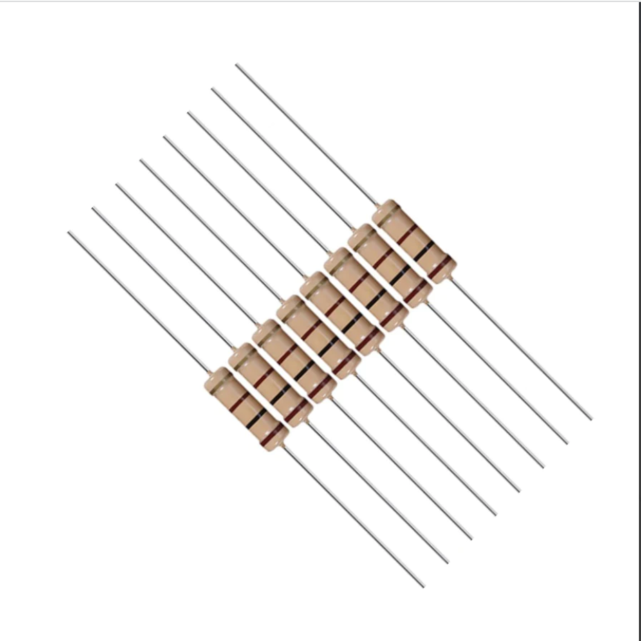
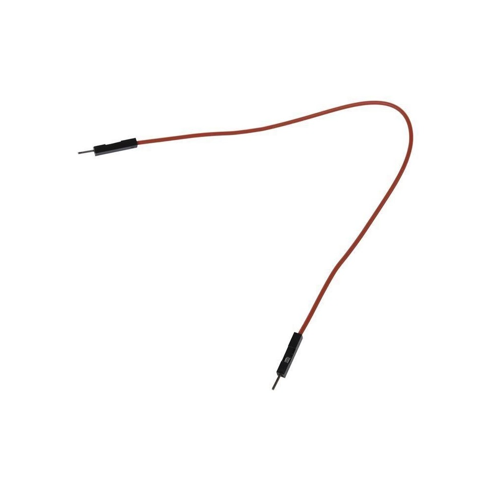

Simulamos un semáforo
Para este circuito vamos a necesitar:
Led
Resistencia
Cable dupont
Placa arduino
Agregamos tres LED, uno de cada color (verde, amarillo y rojo), con sus respectivas resistencias (de 220 ohm), como indica el circuito. Conectamos el rojo al pin 13, el amarillo al pin 12 y el verde al pin 11.
Colocamos todas las resistencias en los pines GND (tierra) de la protoboard .